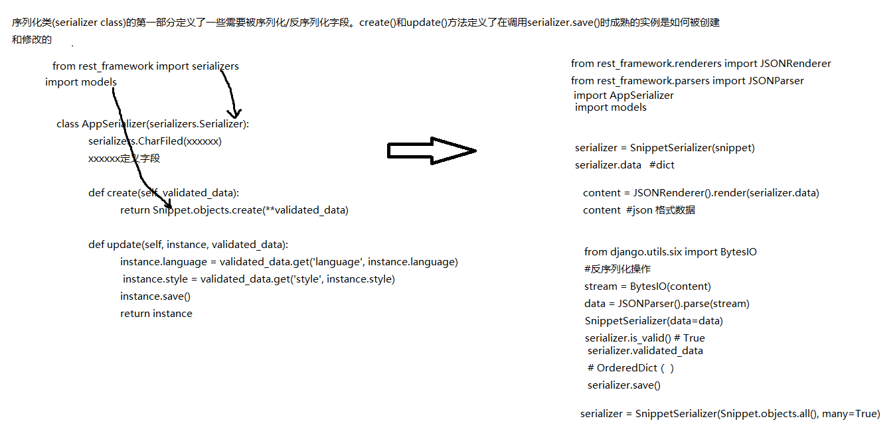

Django restful API
1.安装
pip install django
pip install djangorestframework
2.加入app中
INSTALLED_APPS = (
...
'rest_framework',
'snippets',
)
3.基本使用
Django ModelSerializer
class SnippetSerializer(serializers.ModelSerializer):
class Meta:
model = Snippet
fields = ('id', 'title', 'code', 'linenos', 'language', 'style')
ModelSerializer类并没有做什么有魔力的事情，它们仅仅是一个创建序列话类的快捷方式. 一个自动决定的字段集合.简单的默认create()和update()方法的实现
from snippets.serializers import SnippetSerializer
serializer = SnippetSerializer()
print(repr(serializer))
# SnippetSerializer():
# id = IntegerField(label='ID', read_only=True)
# title = CharField(allow_blank=True, max_length=100, required=False)
# code = CharField(style={'base_template': 'textarea.html'})
# linenos = BooleanField(required=False)
# language = ChoiceField(choices=[('Clipper', 'FoxPro'), ('Cucumber', 'Gherkin'), ('RobotFramework', 'RobotFramework'), ('abap', 'ABAP'), ('ada', 'Ada')...
# style = ChoiceField(choices=[('autumn', 'autumn'), ('borland', 'borland'), ('bw', 'bw'), ('colorful', 'colorful')...
编写views.py
from django.http import HttpResponse
from django.views.decorators.csrf import csrf_exempt
from rest_framework.renderers import JSONRenderer
from rest_framework.parsers import JSONParser
from snippets.models import Snippet
from snippets.serializers import SnippetSerializer
class JSONResponse(HttpResponse):
"""
An HttpResponse that renders its content into JSON.
"""
def __init__(self, data, **kwargs):
content = JSONRenderer().render(data)
kwargs['content_type'] = 'application/json'
super(JSONResponse, self).__init__(content, **kwargs)
@csrf_exempt
def snippet_detail(request, pk):
"""
Retrieve, update or delete a code snippet.
"""
try:
snippet = Snippet.objects.get(pk=pk)
except Snippet.DoesNotExist:
return HttpResponse(status=404)
if request.method == 'GET':
serializer = SnippetSerializer(snippet)
return JSONResponse(serializer.data)
elif request.method == 'PUT':
data = JSONParser().parse(request)
serializer = SnippetSerializer(snippet, data=data)
if serializer.is_valid():
serializer.save()
return JSONResponse(serializer.data)
return JSONResponse(serializer.errors, status=400)
elif request.method == 'DELETE':
snippet.delete()
return HttpResponse(status=204)
Django rest_framework Response、api_view
from rest_framework import status
from rest_framework.decorators import api_view
from rest_framework.response import Response
from snippets.models import Snippet
from snippets.serializers import SnippetSerializer
@api_view(['GET', 'POST'])
def snippet_list(request):
"""
List all snippets, or create a new snippet.
"""
if request.method == 'GET':
snippets = Snippet.objects.all()
serializer = SnippetSerializer(snippets, many=True)
return Response(serializer.data)
elif request.method == 'POST':
serializer = SnippetSerializer(data=request.data)
if serializer.is_valid():
serializer.save()
return Response(serializer.data, status=status.HTTP_201_CREATED)
return Response(serializer.errors, status=status.HTTP_400_BAD_REQUEST)
添加可选格式后缀
def snippet_list(request, format=None):
from django.conf.urls import url
from rest_framework.urlpatterns import format_suffix_patterns
from snippets import views
urlpatterns = [
url(r'^snippets/$', views.snippet_list),
url(r'^snippets/(?P[0-9]+)$', views.snippet_detail),
]
urlpatterns = format_suffix_patterns(urlpatterns)
http http://127.0.0.1:8000/snippets/ Accept:application/json # Request JSON
http http://127.0.0.1:8000/snippets/ Accept:text/html # Request HTML
http http://127.0.0.1:8000/snippets.json # JSON 后缀
http http://127.0.0.1:8000/snippets.api # 浏览用的 API 后缀
动态路由系统
urlpatterns = patterns('',
# Examples:
# url(r'^$', 'DynamicRouter.views.home', name='home'),
# url(r'^blog/', include('blog.urls')),
url(r'^admin/', include(admin.site.urls)),
('^(?P(\w+))/(?P(\w+))/(?P(\d+))/(?P(\d+))/$',process),
('^(?P(\w+))/(?P(\w+))/(?P(\d+))/$',process),
('^(?P(\w+))/(?P(\w+))/$',process),
('^(?P(\w+))/$',process,{'function':'index'}),
)
def process(request,**kwargs):
'''接收所有匹配url的请求，根据请求url中的参数，通过反射动态指定view中的方法'''
app = kwargs.get('app',None)
function = kwargs.get('function',None)
try:
appObj = __import__("%s.views" %app)
viewObj = getattr(appObj, 'views')
funcObj = getattr(viewObj, function)
#执行view.py中的函数，并获取其返回值
result = funcObj(request,kwargs)
except (ImportError,AttributeError),e:
#导入失败时，自定义404错误
return HttpResponse('404 Not Found')
except Exception,e:
#代码执行异常时，自动跳转到指定页面
return redirect('/app01/index/')
return result